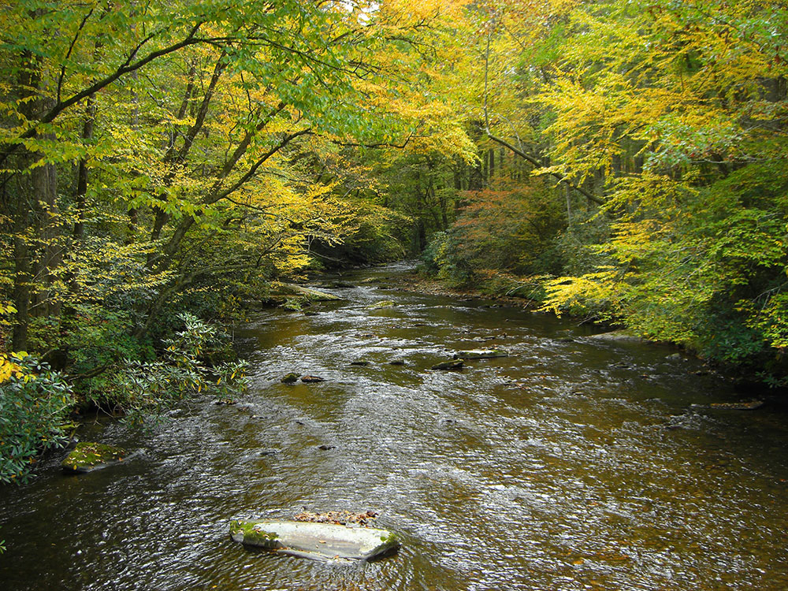
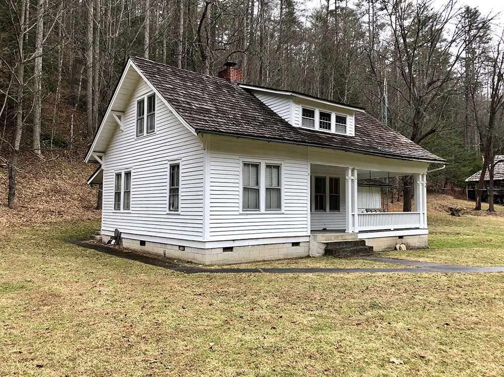
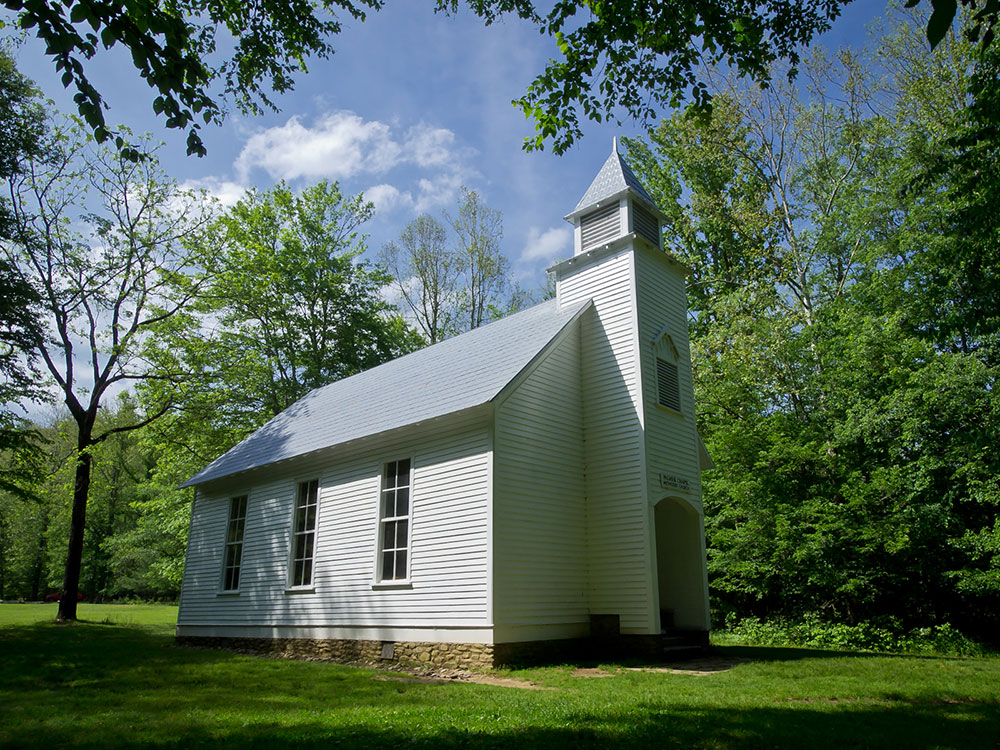

Historic mountain valley featuring preserved homesteads, abundant wildlife viewing opportunities, scenic drives, hiking trails, and one of the largest elk populations in the southeastern United States.
General Information
Road access may be temporarily impacted by weather conditions
Early morning and evening are the best times for wildlife viewing
Great Smoky Mountains National Park parking tag required for vehicles parked longer than 15 minutes
How to Get There
From Maggie Valley, NC (15 mi): Take US-276 N toward Cove Creek Road, follow Cove Creek Road to Cataloochee Entrance Road, then continue on the winding mountain road into the valley and follow signs to the historic area.
Overview
Cataloochee is a valley in the Great Smoky Mountains of North Carolina. Now a recreational and historic area within the Great Smoky Mountains National Park, Cataloochee was once home to a substantial Appalachian community and Cherokee hunting ground.
Cataloochee consists of three narrow valleys running parallel to one another, and "walled in" by the high ridges of the Balsam Mountains. To the northwest is Sterling Ridge and to the southeast is Cataloochee Divide, both of which rise above 5,000 feet for considerable stretches. To the southwest is the 6,155-foot Big Cataloochee Mountain along the Balsam crest, which runs perpendicular to Sterling Ridge and Cataloochee Divide. Two lower ridges, Noland Mountain and Big Fork Ridge, run parallel between Sterling and the Divide, and split Cataloochee into the three valleys.
The northernmost of Cataloochee's three valleys is Little Cataloochee, which is situated along a stream of the same name between Sterling Ridge and Noland Mountain. Across Noland Mountain to the south is Big Cataloochee, the middle of the three valleys, which consists of fertile bottomland along Cataloochee Creek. The southernmost of the three valleys is Caldwell Fork, which is situated between Fork Ridge and the Cataloochee Divide. All three valleys lay along streams that are part of the Pigeon River watershed.
The name "Cataloochee" is derived from the Cherokee term Gadalutsi, which means "fringe standing erect." The name probably referred to the tall rows of trees along the ridges surrounding the valley. The Cherokee used the valley primarily as a hunting ground. Early settlers recalled at least one Cherokee hunting camp in the vicinity of Little Cataloochee Creek.
The Cataloochee Trail, which stretched from the Cove Creek area to what is now Cosby, Tennessee, connected the Cherokee Middlesettlements with the Overhill towns. The modern Cove Creek Road closely parallels this trail. By the time the first European explorers and traders arrived, the trail had been worn a foot deep in some places. Bishop Francis Asbury used it to cross the mountains into Tennessee in 1810.
The Cherokee gave up their claims to Cataloochee when they signed the Treaty of Holston in 1791 though they continued to hunt and fish in the valley throughout the 19th century.
Compared to other driving destinations within the park, Cataloochee remains relatively remote. While a well-maintained paved road traverses Big Cataloochee, the valley is connected to the outside world by the crude gravel Cove Creek Road, which is riddled with sharp turns as it crosses Cataloochee Divide and Sterling Ridge. Cove Creek Road is accessible from Jonathan Creek Road (I-40, Exit 20) or from the Big Creek area near Waterville, North Carolina.
Cataloochee Campground lies at the junction of Caldwell Fork and Cataloochee Creek. Backcountry campsites are located along the Caldwell Fork Trail, Rough Creek Trail, and Pretty Hollow Gap Trail.
In 2001, the Appalachian Highlands Science Learning Center was established at Purchase Knob (atop Cataloochee Divide) on land donated to the park by Kathryn McNeil and Voit Gilmore the previous year. The purpose of the center, part of a network of 32 such research centers throughout the national park system, is to facilitate scientific research in the Appalachian highlands and increase public awareness and understanding of this research. The center, located along the Cataloochee Divide Trail, includes laboratories and housing for visiting scientists.
Elk were reintroduced into the park in February 2001 when 25 elk from the Land Between the Lakes National Recreation Area were released in Cataloochee. Elk once roamed the highlands of Southern Appalachia, but were eliminated by overhunting and loss of habitat. Elk herds are a common sight in Cataloochee in the Spring and Fall.
For anthropological and historical purposes, the National Park Service has preserved several structures dating to Cataloochee's pre-park days. Unlike other historical areas of the park such as Cades Cove and the Mountain Farm Museum at Oconaluftee, many of the structures in Cataloochee have a more modern look, and are more representative of life in the early 20th century as opposed to pioneer life in Appalachia. Notable exceptions are the Cook Cabin and Hannah Cabin.
The Hannah Cabin in Little Cataloochee was built by John Jackson Hannah, the son of Little Cataloochee pioneer Evan Hannah. The cabin's chimney is one of only three surviving brick chimneys in the national park.
The Cook Cabin in Little Cataloochee was built by Dan Cook in the 1850s. It was dismantled in the 1970s after being vandalized, and restored to its original site in 1999. The ruins of Cook's applehouse (built by Cook's son-in-law Will Messer) are on the opposite side of the trail.
The Palmer House in Big Cataloochee was built in 1869 by George Lafayette Palmer. Originally a log cabin, a framed addition and weatherboarding were added later by Palmer's son, Jarvis. Along with the house, the site includes the Palmers' frame springhouse, smokehouse, and barn. The house now contains a self-guided museum.
The Palmer Chapel in Big Cataloochee was built in 1898 on land deeded by Mary Ann Palmer.
The Caldwell House in Big Cataloochee was built 1898-1903 by Hiram Caldwell. The Caldwell Barn, adjacent to the house, was built in 1923.
The Steve Woody House in Big Cataloochee was built in 1880 by Steve Woody, the son of Jonathan Woody. The house was originally built of logs. Later, paneling and extra rooms were added as lumber from sawmills became widely available. The house is located along the Rough Fork Trail, a mile from the road. Woody's springhouse is nearby.
The Little Cataloochee Baptist Church (sometimes called Ola Baptist Church) in Little Cataloochee was built in 1889. Will Messer later built the belfry, which included a bell donated by William Hannah.
The Messer Barn was built by Will Messer around 1905, and was originally located in Little Cataloochee. It was later moved to the ranger's residence, where it stands today. Messer's applehouse is now located at the Mountain Farm Museum in Oconaluftee. Will's cousin, John Messer, built the Messer Barn that now stands in Greenbrier, on the Tennessee side of the mountains.
Along with these intact structures, a number of rockwalls, chimney falls, and cemeteries remain in the Caldwell Fork, Big Cataloochee, and Little Cataloochee valleys.
This article uses material from the Wikipedia article "Cataloochee (Great Smoky Mountains)", which is released under the Creative Commons Attribution-Share-Alike License 3.0



.jpg){kind=link}
